Je vais vous présenter les acquis que j’ai développés dans le cadre de la compétence Administrer les réseaux et l’Internet,
à travers différents apprentissages critiques
AC11.01 : Maîtriser les lois fondamentales de l’électricité afin d’intervenir sur des équipements de réseaux et télécommunications.
Introduction : Cette compétence nous a permis de découvrir les fondements de l’électricité et de mieux comprendre leur application dans notre domaine d’étude, à travers différents modules techniques et scientifiques.
Pendant tout le long de notre semestre, nous avons été introduits à différentes lois fondamentales de l’électricité, en particulier en basse tension.
Nous avons pu apprendre, par exemple, la loi d’Ohm, la loi des mailles, la loi des nœuds, les impédances, le modèle de Thévenin, ainsi que les différents types de filtres.
Nous avons également étudié la logique combinatoire, notamment les opérations élémentaires.
Toutes ces lois sont essentielles dans l’apprentissage de notre domaine — les réseaux et les télécommunications — car elles constituent les bases des technologies qui nous entourent,
qu’il s’agisse de nos ordinateurs ou de toute forme de transmission d’onde (Bluetooth, Wi-Fi, etc.).
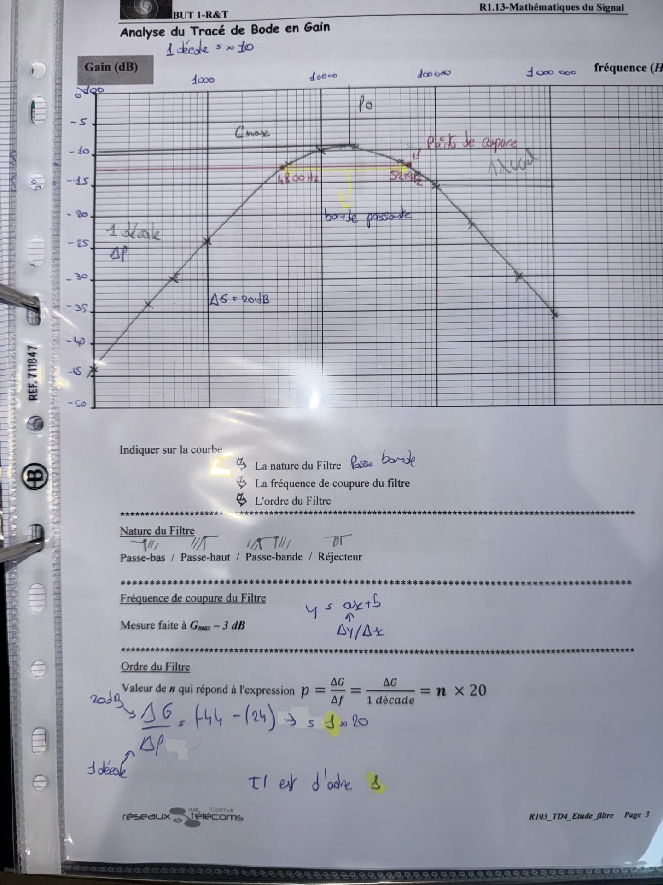
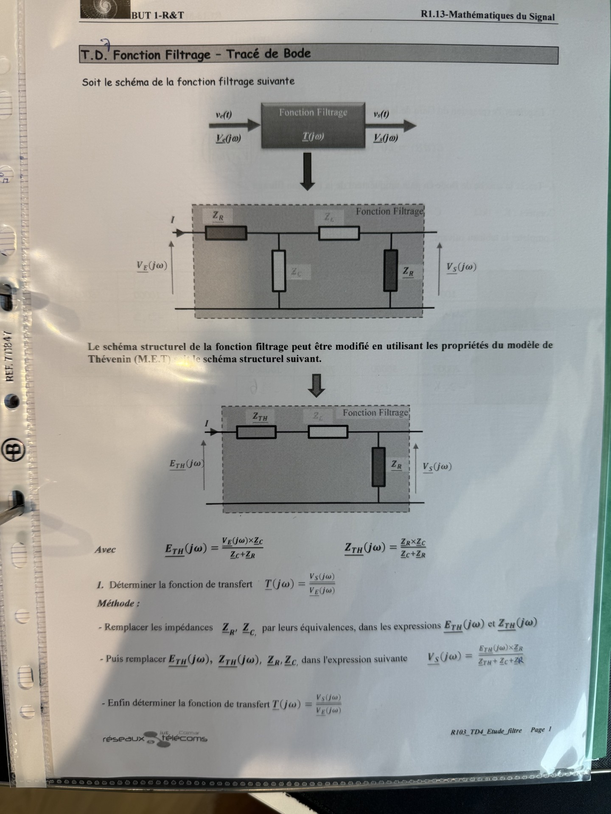
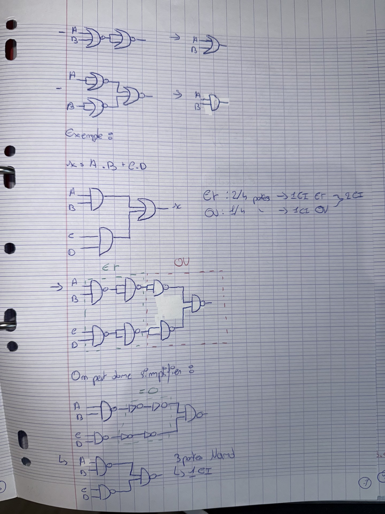
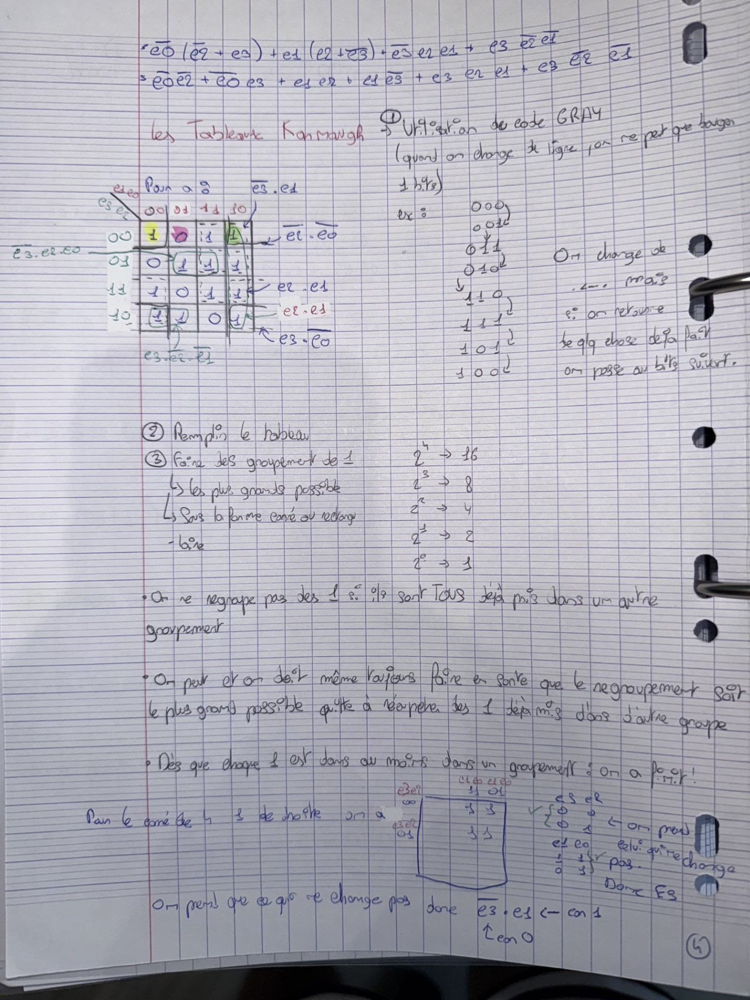
Conclusion : Grâce à cet apprentissage critique, j’ai acquis des bases solides en électricité et en logique, indispensables pour comprendre les équipements électroniques et les systèmes numériques que nous manipulons dans notre formation.
Je suis désormais capable de mieux appréhender les circuits, les composants, et leurs fonctions, ce qui me sera utile dans les années à venir.
R1.13 : Mathématiques du signal
R1.06 : Architecture des systèmes numériques et informatiques
R1.14 : Mathématiques des transmissions
AC11.02 : Comprendre l’architecture et les fondements des systèmes numériques, les principes du codage de l’information, des communications et d’Internet.
Introduction : Cette compétence a été développée tout au long de l’année à travers des modules clés portant sur l’architecture des systèmes numériques, le codage, et le fonctionnement des réseaux et d’Internet.
Pour développer cette Apprentissage Critique, il est essentiel de commencer par comprendre le fonctionnement de nos ordinateurs.
Ce point a été abordé dans le module R1.06 : Architecture des systèmes numériques et informatiques, où nous avons appris comment un ordinateur fonctionne à un niveau bas,
notamment à travers la logique combinatoire utilisant des 1 et des 0.
Nous avons poursuivi cet apprentissage avec le module R1.14 : Mathématiques des transmissions, où nous avons découvert le fonctionnement des différents systèmes de codage
(binaire, hexadécimal, décimal).
Une fois ces compétences acquises, nous avons pu commencer à comprendre les bases des communications sur Internet, en étudiant le principe des trames et l'encapsulation des informations.
Nous avons approfondi nos connaissances en analysant les trames pour identifier les différents protocoles de communication (TCP/IP).
Toutes ces notions ont été abordées dans les modules R1.01 : Initiation aux réseaux informatiques et R1.02 : Principes et architecture des réseaux.
Lors du deuxième semestre, nous avons consolidé les acquis du premier semestre tout en découvrant de nouvelles compétences.
Nous avons notamment été introduits au concept de routage avec le module R2.01 : Technologie de l’Internet, en étudiant le fonctionnement des routeurs,
les principes du routage et du forwarding, ainsi que les protocoles RIP et OSPF.
Nous avons également appris à configurer des routes statiques et étudié le principe de la subdivision de réseau, indispensable à la gestion des adresses IP aujourd’hui.
Ces notions ont été mises en pratique à travers des TD où nous avons simulé des situations proches de la réalité.
Une autre notion importante abordée dans ce module est l’Internet Protocol Version 6 (IPv6).
Nous avons eu l’opportunité de découvrir ce protocole, de comparer ses caractéristiques avec celles de son prédécesseur (IPv4),
et de comprendre les spécificités liées à son fonctionnement, notamment dans la gestion des routes statiques.
Enfin, nous avons appris la notion de fragmentation IP, une fonctionnalité largement utilisée aujourd’hui et qu’il est crucial de maîtriser.
Toutes ces connaissances ont également été mises en pratique lors des Travaux Pratiques en réseaux réalisés chaque vendredi.
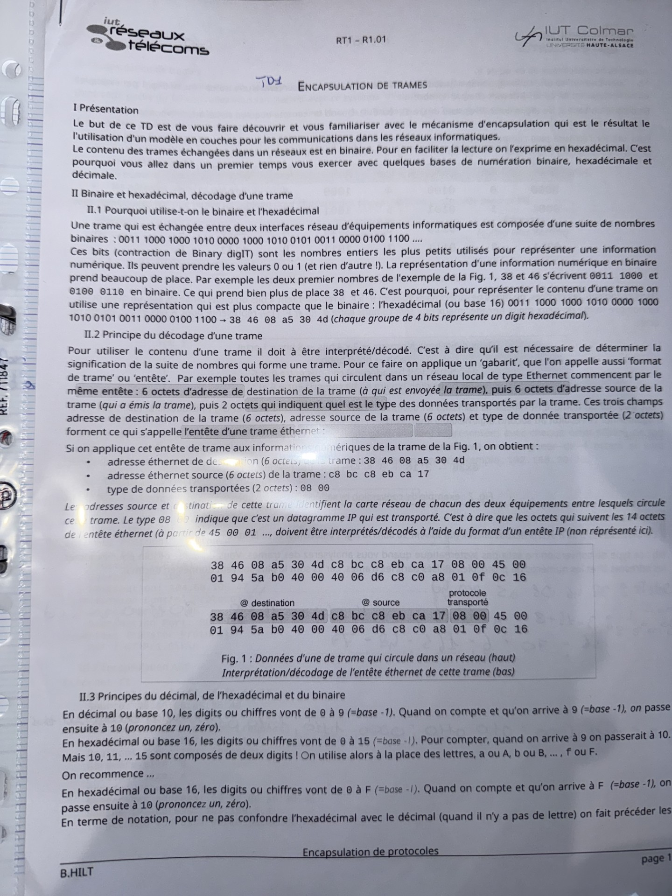
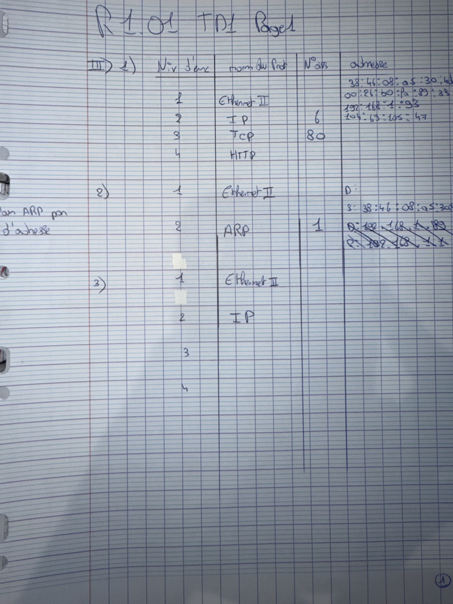
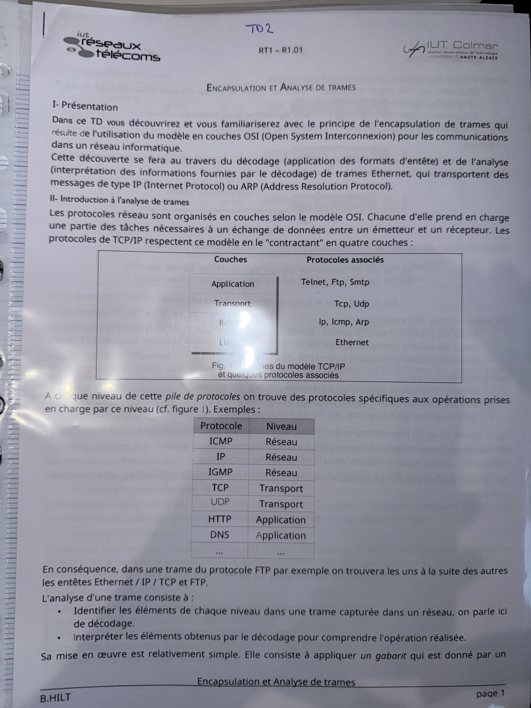
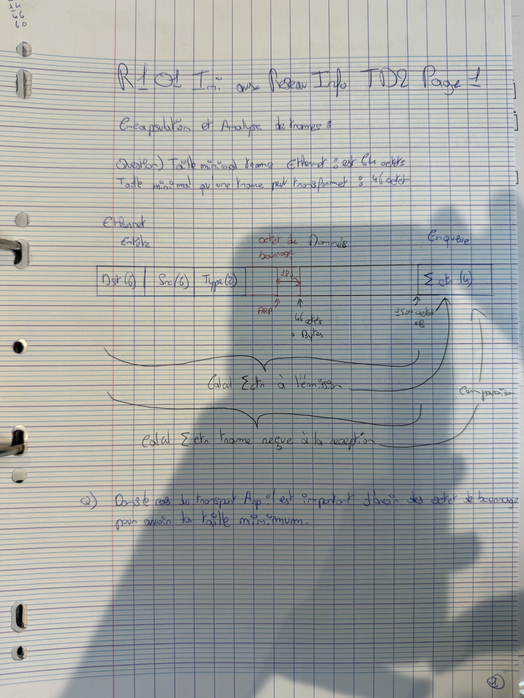
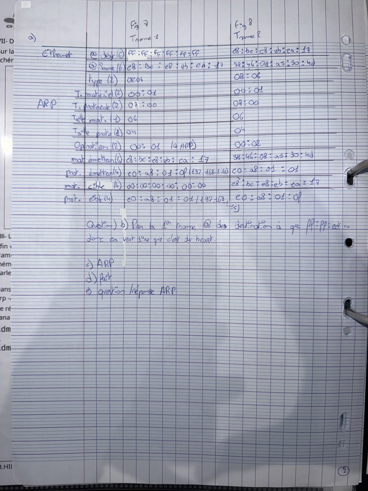
Conclusion : cette compétence m’a permis de comprendre en profondeur l'architecture des réseaux et les principes fondamentaux du codage et des communications numériques.
Grâce à des modules complémentaires et à une mise en pratique régulière, je suis aujourd’hui capable de concevoir, interpréter et analyser des architectures réseau simples à intermédiaires.
R1.01 : Initiation aux réseaux informatiques
R1.02 : Principes et architecture des réseaux
R1.06 : Architecture des systèmes numériques et informatiques
R1.14 : Mathématiques des transmissions
R2.01 : Technologie de l’Internet
AC11.03 : Configurer les fonctions de base d’un réseau local.
Introduction : Cette compétence m’a permis de découvrir les bases de la configuration réseau, à travers de nombreux projets pratiques et l'apprentissage des protocoles essentiels au bon fonctionnement d’un réseau local.
Tout d’abord, nous avons pu acquérir et développer des compétences théoriques à travers les modules
R1.01 : Initiation aux réseaux informatiques,
R1.02 : Principes et architecture des réseaux,
et R1.03 : Réseaux locaux et équipements actifs.
Ces modules nous ont permis d’aborder les bases des réseaux, comme le fonctionnement des trames ou encore le modèle OSI.
Dans le module R1.03, nous sommes allés plus loin en découvrant les notions de topologies de réseau, de domaine de collision, ainsi que le fonctionnement des tables de commutation.
En résumé, nous avons commencé avec des réseaux centrés sur les commutateurs, puis avons progressivement intégré les routeurs pour concevoir des réseaux plus complexes.
Comme pour tous les cours de réseaux, notre apprentissage a été renforcé par des travaux pratiques, qui nous ont permis de mettre en œuvre les connaissances théoriques acquises.
Par exemple, nous avons découvert en TD le principe du protocole Spanning Tree, que nous avons ensuite mis en pratique pour mieux comprendre son utilité et son fonctionnement.
Nous avons également étudié le protocole VTP (VLAN Trunking Protocol), qui permet une gestion centralisée des VLAN au sein d’un réseau.
Toutes ces connaissances ont pu être mises en application et approfondies dans le cadre de la SAÉ 1.02 : S’initier aux réseaux informatiques.
L’objectif de ce projet était de concevoir un petit réseau d’entreprise en intégrant un commutateur et un routeur.
Nous avons mis en place le service DHCP pour l’attribution automatique des adresses IP, réalisé du routage inter-VLAN via notre routeur,
et utilisé le protocole VTP pour gérer nos VLAN à l’aide d’un second commutateur de secours.
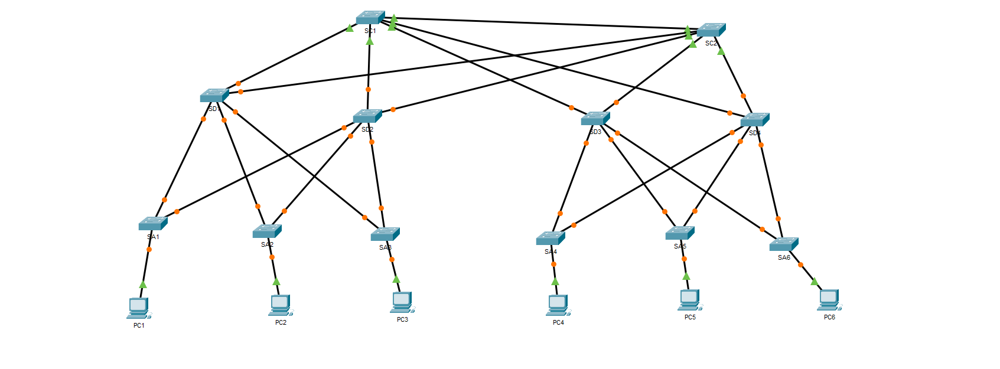
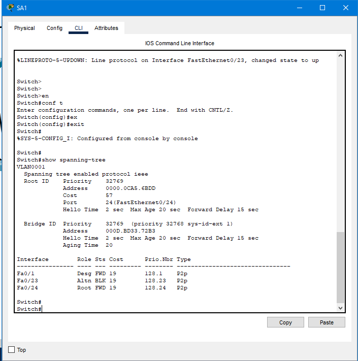
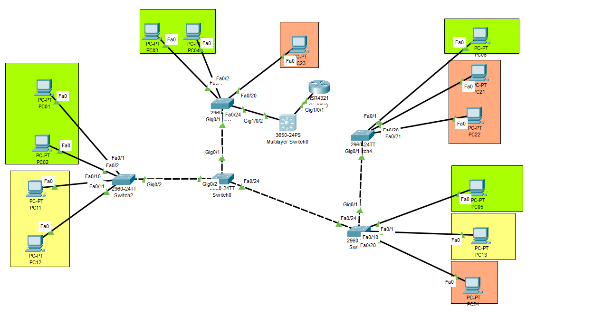
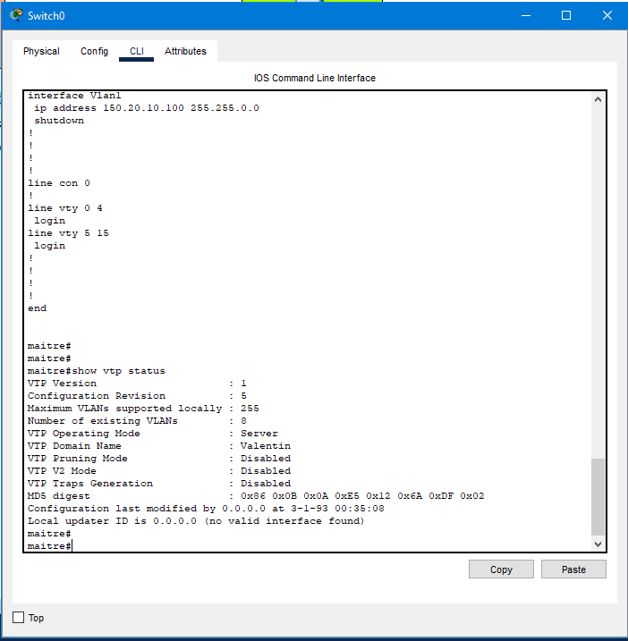
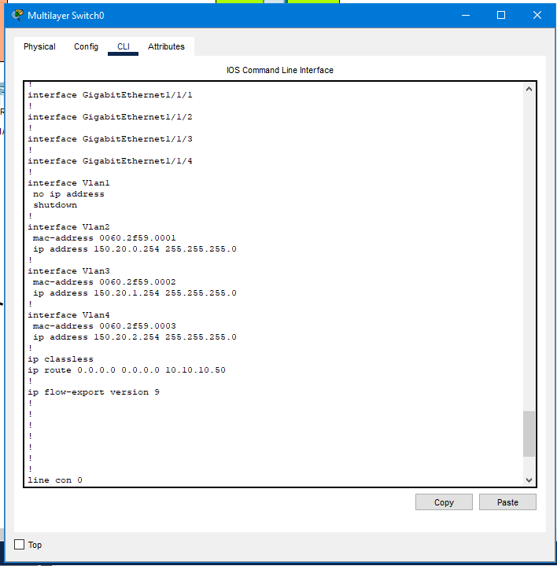
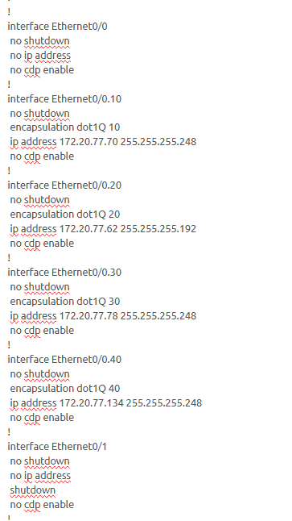
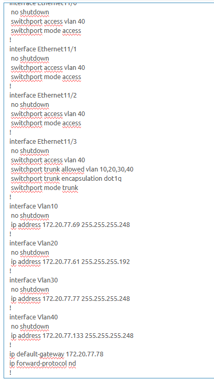
Lors du second semestre, nous avons poursuivi notre apprentissage des réseaux en approfondissant la compréhension des routeurs : leur fonctionnement,
les spécificités des protocoles de routage, ainsi que leur configuration pour permettre la communication entre plusieurs réseaux.
Nous avons effectué de nombreux travaux pratiques, notamment sur Cisco Packet Tracer, afin de bien assimiler le rôle des routeurs.
Toutes ces notions ont été abordées dans le module R2.01 : Technologie de l’Internet.
Nous avons également mené un projet dans le cadre de la SAÉ 2.01 : Construire un réseau, réalisé sur le logiciel de simulation GNS3.
Ce logiciel permet l’intégration de fichiers ISO pour simuler différents systèmes d’exploitation sur des ordinateurs, commutateurs ou routeurs virtuels.
L’objectif de ce projet était de concevoir une simulation de réseau d’entreprise en y intégrant plusieurs services :
– Un serveur DHCP ;
– Un serveur FTP ;
– Un serveur web basé sur Apache.
Nous avons également mis en place le protocole de routage RIP afin de faciliter la communication entre les routeurs, sans avoir à configurer manuellement des routes statiques pour chacun.
J’ai aussi implémenté le protocole VTP pour assurer une gestion centralisée des VLANs que j'avais créés.
Un autre point important fut la mise en place de Listes de Contrôle d’Accès (ACL), qui m'ont permis de commencer à sécuriser le réseau en définissant des règles précises d’accès.
Dans cette optique de sécurité, j’ai également activé la fonctionnalité port-security sur les commutateurs pour limiter les connexions non autorisées.
Grâce à ce projet, nous avons pu consolider nos compétences en réseau tout en explorant un large éventail de notions pratiques et techniques.
Conclusion : si je dois établir un bilan pour cette Apprentissage Critique, je considère avoir acquis l’ensemble des compétences demandées,
grâce aux nombreux travaux pratiques, projets et cours théoriques.
Toutes les notions abordées dans cette AC m’ont paru claires et ne m’ont pas posé de difficulté particulière.
R1.01 : Initiation aux réseaux informatiques
R1.02 : Principes et architecture des réseaux
R1.03 : Réseaux locaux et équipements actifs
R2.01 : Technologie de l’Internet
SAÉ 1.02 : S’initier aux réseaux informatiques
SAÉ 2.01 : Construire un réseau
AC11.05 : Identifier les dysfonctionnements du réseau local et savoir les signaler ou intervenir.
Introduction :Pour devenir un technicien réseau efficace, il est essentiel de savoir identifier, diagnostiquer et résoudre les dysfonctionnements. Cela suppose une compréhension des outils de test, des services réseau, et une méthode rigoureuse pour localiser l’origine d’un problème.
Lors de nos différents travaux pratiques et projets/SAÉ, j’ai été confronté à plusieurs dysfonctionnements sur divers environnements.
Nous avons souvent dû trouver des solutions par nous-mêmes, notamment dans les projets où nous étions moins guidés, ce qui a exigé de l’autonomie et de la rigueur.
Si je devais donner un exemple concret, ce serait la SAÉ 2.01 : Construire un réseau, où j’ai rencontré de nombreux problèmes avec le logiciel GNS3.
J’ai notamment eu des difficultés liées à la mise en place du NAT pour l’interconnexion entre ma maquette et le réseau extérieur, ainsi que des dysfonctionnements sur le protocole de routage RIP.
Un autre exemple serait la SAÉ 1.02 : S’initier aux réseaux informatiques, dans laquelle j’ai rencontré plusieurs problèmes lors de la configuration du serveur DHCP.
De manière générale, de nombreux travaux pratiques ont également été l’occasion de faire face à des dysfonctionnements techniques variés.
Pour résoudre ces problèmes, j’ai mis en place une méthode progressive : réduire petit à petit le périmètre afin d’identifier précisément la source du dysfonctionnement.
Par exemple, dans la SAE 2.01, pour comprendre pourquoi le protocole RIP ne fonctionnait pas, j’ai effectué des tests de connectivité (ping) entre les équipements,
en partant de celui le plus proche jusqu’à la destination finale. Cette approche m’a permis d’identifier rapidement l’équipement réseau en cause.
Conclusion : Cet Apprentissage Critique m’a permis de développer ma capacité à diagnostiquer des pannes réseau, à raisonner méthodiquement et à agir avec autonomie.
Grâce aux projets pratiques et aux modules techniques, je me sens désormais plus à l’aise pour analyser et résoudre les dysfonctionnements rencontrés dans un environnement réseau réel.
R1.01 : Initiation aux réseaux informatiques
R1.02 : Principes et architecture des réseaux
R1.03 : Réseaux locaux et équipements actifs
R2.01 : Technologie de l'internet
R2.03 : Bases des services réseaux
SAÉ 1.02 : S’initier aux réseaux informatiques
SAÉ 2.01 : Construire un réseau
AC11.05 : Identifier les dysfonctionnements du réseau local et savoir les signaler ou intervenir.
Introduction :Être capable de diagnostiquer et résoudre des problèmes réseau est une compétence fondamentale dans le domaine des réseaux et télécommunications. Elle nécessite une bonne connaissance des protocoles, une méthode rigoureuse, et l’usage d’outils adaptés pour identifier efficacement l'origine des dysfonctionnements.
Lors de nos différents travaux pratiques et projets/SAÉ, j’ai été confronté à plusieurs dysfonctionnements sur divers environnements.
Nous avons souvent dû trouver des solutions par nous-mêmes, notamment dans les projets où nous étions moins guidés, ce qui a exigé de l’autonomie et de la rigueur.
Si je devais donner un exemple concret, ce serait la SAÉ 2.01 : Construire un réseau, où j’ai rencontré de nombreux problèmes avec le logiciel GNS3.
J’ai notamment eu des difficultés liées à la mise en place du NAT pour l’interconnexion entre ma maquette et le réseau extérieur, ainsi que des dysfonctionnements sur le protocole de routage RIP,
qui refusait de fonctionner correctement.
Un autre exemple serait la SAÉ 1.02 : S’initier aux réseaux informatiques, dans laquelle j’ai rencontré plusieurs problèmes lors de la configuration du serveur DHCP.
De manière générale, de nombreux travaux pratiques ont également été l’occasion de faire face à des dysfonctionnements techniques variés.
Pour résoudre ces problèmes, j’ai mis en place une méthode progressive : réduire petit à petit le périmètre afin d’identifier précisément la source du dysfonctionnement.
Par exemple, dans la SAE 2.01, pour comprendre pourquoi le protocole RIP ne fonctionnait pas, j’ai effectué des tests de connectivité (ping) entre les équipements,
en partant de celui le plus proche jusqu’à la destination finale. Cette approche m’a permis d’identifier rapidement l’équipement réseau en cause.
Conclusion : cet Apprentissage Critique m’a permis de développer ma capacité à diagnostiquer des pannes réseau, à raisonner méthodiquement et à intervenir de manière ciblée.
Grâce aux projets pratiques et aux modules techniques, je me sens désormais plus à l’aise pour analyser et résoudre les dysfonctionnements rencontrés dans un environnement réseau réel.